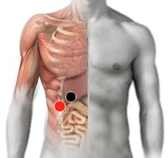

Hepatitis C
Par
hígado - hígado
hígado - parietal

Generalidades:
Hepatitis C. Es tóxica, no es ni bacterial ni viral, se da por ingestión de grasas Amarillas y aceites crudos (como en tamales) como margarina, manteca vegetal o por muchas medicinas alopáticas, anabólicos, clembuterol, etc. puede producir Cirrosis, niveles altos de colesterol y triglicéridos, así como los síntomas típicos de la hepatitis.
Transmisión
Por consumir tóxicos, grasas, medicamentos, etc. Con el rastreo mental se puede preguntar cual es el agente dañino.